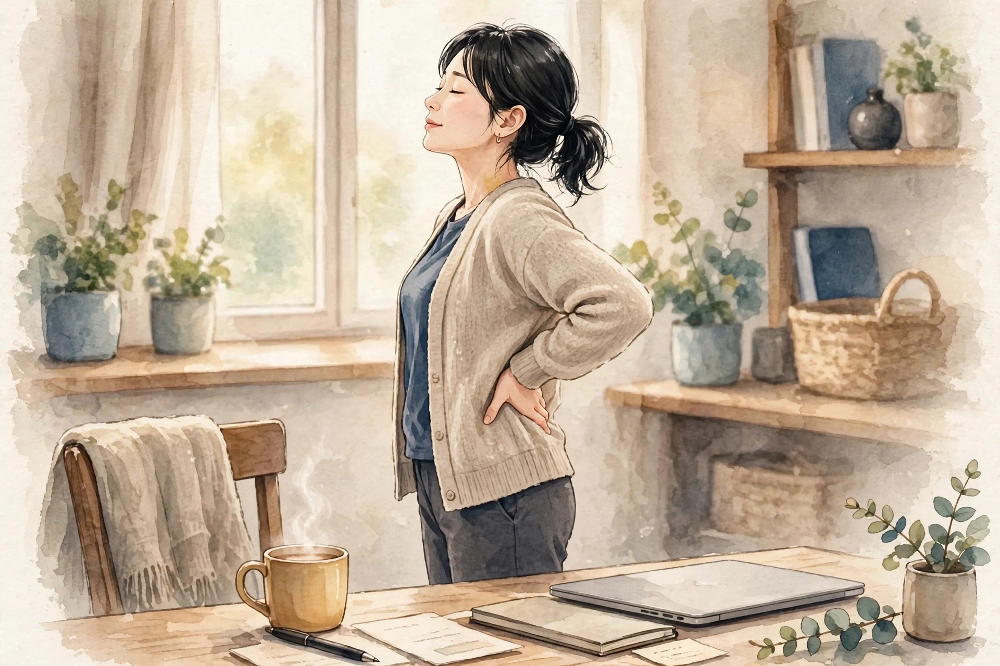

天神で年末の大掃除の後に気になる腰の重さ｜重い家具を動かした日の過ごし方とセルフケア、受診の目安｜美容整体ステラ・アンタレス

福岡の年末は、天神の通りにも年の瀬のにぎわいが広がる時期です。クリスマスの買い物で荷物が増え、家の大掃除では収納の整理や窓拭きに取り組む方も多いのではないでしょうか。掃除が終わった夜、椅子から立ち上がるときに腰が重い、翌朝、腰の伸びにくさを感じる、そんな経験はありませんか。腰の重さとは、腰まわりの筋肉が張って、体を動かすときに重だるさを感じる状態の一般的な呼び方で、重い物を持ち上げたあとや、前かがみの姿勢が長く続いたときに感じやすくなると言われています。このコラムでは、大掃除のあとに腰の重さが気になるときに、どんな場面で腰に負担がかかりやすいのか、作業の進め方やセルフケア、受診を考える目安についてお伝えします。
腰の重さとは、どんな状態か
腰の重さは、腰のあたりが重だるい、体を起こすときに腰が伸びにくい、歩き始めに腰がこわばる、といった感じ方を指す言葉として使われることが多いです。腰痛のように鋭い痛みがあるわけではなく、重さやだるさが中心になることもあります。腰の重さの一般的なとらえ方は、腰の重さ・腰痛の症状ページでも紹介しています。
腰は、骨盤のうえで上半身を支え、歩くときや体をひねるときの動きの要にもなる場所です。だからこそ、重い物を持ち上げたり、前かがみで作業を続けたりすると、腰まわりの筋肉に負担が集まりやすくなります。大掃除のように、ふだんはしない動きをまとめて行う日は、腰の重さを感じやすい場面が重なります。掃除のあとに腰の重さを感じたら、その日の作業のなかで、どんな動きが多かったかを思い出してみてください。
大掃除の日に腰へ負担がかかりやすい場面
まず、収納の整理です。押入れや棚の上の物を出し入れするとき、腰をひねりながら重い物を持ち上げることが多くなります。膝を曲げずに前かがみで持ち上げると、腰まわりに大きな力がかかると言われています。重い物を動かすときは、膝を曲げて腰を落とし、脚の力で持ち上げる意識が大切です。1人で無理に動かさず、家族や身近な人と一緒に動かすと、腰への負担を分け合えます。
次に、窓拭きとベランダの掃除です。窓を拭くときは、体をひねりながら腕を伸ばす動きが続きます。ベランダの床を掃くときは、前かがみの姿勢が長く続き、腰の後ろ側の筋肉に負担がかかりやすくなります。立ったままモップを使ったり、膝をついて作業したりすると、前かがみの時間を減らせます。姿勢・猫背が気になる方は、作業の合間に体を起こし、腰を反らせるようにゆっくり伸ばすと、重さを感じにくくなります。
福岡の冬の湿気と冷え込みも、腰の重さと関わりがあります。天神の冬は、雨の日の湿気が残りやすく、朝晩は冷え込みます。窓を開けたまま掃除を続けると、体が冷えた状態で無理な姿勢をとることになり、腰や肩がこわばりやすくなると言われています。冷えが気になる日は、掃除の前に体を温め、腰まわりを冷やさないようにしましょう。
大掃除のあとの過ごし方とセルフケア
大掃除は、1日で終わらせようとせず、日を分けて進めるのがおすすめです。今日はリビング、明日は寝室、というように場所ごとに区切り、30分ほど作業したら休みを入れてください。休みの時間には、腰をゆっくり伸ばす、体を起こして深呼吸をする、といった小さな動きを挟みましょう。家族と分担すると、1人あたりの作業量が減り、腰への負担も軽くなります。
道具の使い方も見直してみてください。掃除機は、重いものを持ち上げて運ぶのではなく、コードの届く範囲で使う、階段では下の段から始める、といった工夫ができます。雑巾がけは、腰を落として体全体で動かすと、腰だけに力が入りにくくなります。家具を動かすときは、中身を出して軽くしてから、毛布やタオルを下に敷いて滑らせる方法もあります。
作業が終わったあとの過ごし方も、腰の重さの日のセルフケアのひとつです。ぬるめのお湯にゆっくりつかり、腰まわりを温めると、こわばりがほぐれやすくなります。湯船のなかで膝を立てて座り、腰をゆっくり動かすのもおすすめです。入浴のあとは、温かい飲み物を飲みながら静かに過ごし、早めに就寝して睡眠を確保すると、翌日の体の重さを感じにくくなります。
買い物帰りの荷物と大掃除の日の腰の使い方
年末の買い物帰りの荷物の持ち方も、腰の重さの日の見直しポイントのひとつです。天神のデパートや商店街で買い物をすると、荷物が増えて片手に重さが集中しやすくなります。荷物は両手に分けて持つ、リュックを使う、といった工夫が役立ちます。重い荷物を持って階段を上るときは、膝を曲げて腰を落とし、脚の力で持ち上げる意識が大切です。
大掃除の日の腰の使い方も、見直してみてください。家具を動かすときは、中身を出して軽くしてから、毛布やタオルを下に敷いて滑らせる方法があります。押入れの整理では、重い物を高い場所に上げるとき、脚立の高さを調整して無理な姿勢を避けましょう。体をひねりながら重い物を持つと、腰への負担が大きくなります。重い物を持つときは、体の正面で持つように心がけてください。
作業のペース配分も、腰をいたわる工夫のひとつです。調子のよいうちに一気に進めようとすると、腰への負担がまとめてかかります。タイマーで30分ごとに区切り、休みの時間には温かい飲み物を飲みながら座って休みましょう。休みの時間に、腰をゆっくり伸ばす、体を起こして深呼吸をする、といった小さな動きを挟むと、重さを感じにくくなります。
大掃除の日の食事と水分も、腰の重さの日の見直しポイントです。体を動かす時間が長い日は、気づかないうちに水分が不足しがちです。作業の合間に温かい飲み物をこまめに口にし、昼食には温かい汁物を一品加えてみてください。作業のあとは、早めに夕食を済ませ、ゆっくり休む時間を確保することが大切です。冷たい飲み物ばかりにならないよう、温かいものを選ぶ工夫もおすすめです。
受診を考える目安
セルフケアを続けても、腰の重さと一緒に気になる変化がある場合は、早めに医療機関を受診してください。たとえば、腰の痛みが強くて起き上がりにくい、足にしびれや力が入りにくい感じがある、夜に痛みで目が覚める、といった様子です。こうしたときは、自己判断で様子を見るのではなく、整形外科やかかりつけ医に相談しましょう。
腰の重さが何日も続き、休んでも変わらない場合も、医療機関に相談してみてください。受診のときは、どんな作業のあとに重さを感じたか、朝と夜で感じ方が違うか、しびれの有無などを伝えると、医師が様子をつかみやすくなります。
受診のときに伝える内容を、あらかじめメモしておくと役立ちます。たとえば、どんな作業のあとに腰の重さを感じたか（収納の整理の日・前かがみの掃除のあと・朝起きたとき）、重さの感じ方、続いている期間、足のしびれの有無、睡眠の様子です。問診では、仕事の内容や生活リズムも聞かれることがあります。気になる変化を書き留めておくと、受診のときに伝えやすくなります。
それでも年末の大掃除のあとの腰の重さや、体の冷えが抜けない日は、プロの手に委ねる時間も選択肢のひとつです。美容整体ステラ・アンタレスは、福岡・天神エリアで開院準備中の女性専用サロンです。オイルマッサージと美容整体で、大掃除のあとに気になる腰の重さや体の疲れを、丁寧にほぐすお手伝いができるよう準備を進めています。料金は90分10,000円の単一価格（初回割引なし）、営業時間は月〜土17:00〜22:00・日曜休み（予定）です。近日開院予定（受付は開始次第、このサイトとLINE公式でお知らせします）。お問い合わせ用のLINE公式アカウントを開設しました。開院まで、このコラムで季節のセルフケアをお届けしていきます。